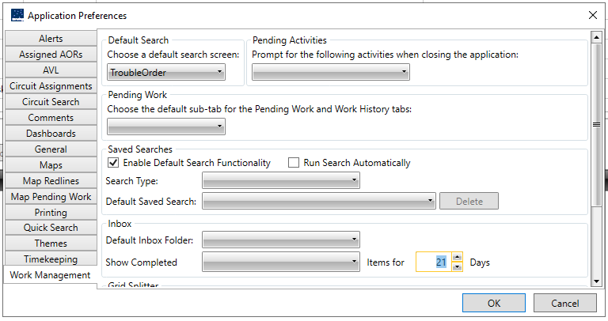

Preferences
Preferences describe settings for the application. These preferences are applied only to your profile. You can personalize certain parameters in the system such as selecting specific alerts in the inbox to be displayed, creating standard comments for work items, setting map viewing preferences and printing settings, and setting a default theme.
Alerts
The Alerts tab allows users to manage their alert preferences based on priority levels and types of work-related alerts.
Priority Levels
Todo: Find out the proper order of priority
1:
2:
3:
User Steps
-
Accessing Alerts Preferences
The user navigates to General → Preferences and selects the Alerts tab. -
Setting Priority Threshold
The user sets the minimum priority level for alerts they wish to receive using a dropdown menu also with an option to Clear Selection
-
Customizing Alert Types
The user checks or unchecks boxes to choose which types of alerts to show and/or receive:- Rejected timesheet alerts (This is is available based on user role)
- Released timesheet alerts
- Trouble Order alerts
- Trouble Report completion alerts
-
Saving Preferences
- After customizing their alert settings, the user saves their preferences by pressing OK button.
Assigned AORs
The Assigned AORs (Areas of Responsibility) tab is part of the application preferences settings. It allows users to manage their assigned operational areas or locations within the application.
Assigned AORs List
This panel displays a list of operational areas or locations that can be assigned to users. These represent areas of responsibility within the application already assigned to the user.
Selection and Management
-
User Primary AORs
Users can select and manage their primary AORs by adding them to the User Primary AORs using the Select buttons or remove the selected AORs with the Remove buttons .
The User Primary AORs influence the priority of data and tasks that are presented to the user in the Inbox. -
Admin Primary AORs
This list is managed by administrators to assign primary AORs to users, reflecting the areas where they have primary oversight or responsibility. -
Default Selection Field
At the bottom of the list panel, there is a default selection field showing the currently selected AOR. This field is likely editable, allowing users to quickly select an AOR as their default.
Confirmation Buttons:
OK and Cancel buttons are for confirming or dismissing changes made respectively.
AVL Test edit
Settings
- Follow Me
Automatically centers the map on 'My Location' when approaching the map edge.
It has a dropdown to set the percentage of distance to edge of map to trigger re-centering on the user's position that defaults to10%other valid options are:0%,10%,20%,30%,40%,50%
Navigation
- Start CoPilot Automatically: Checkbox to launch CoPilot when the application starts.
- Show Navigation Warning Popup: Checkbox to enable/disable warning popups when CoPilot fails to find an address.
Circuit Search
This sets the default choice radio button for the selected region in Distributed Circuit Search either, the substation will belong inside a Work Location or a Sector of the selected region.
Comments
The Comments tab creates standard comments (text messages) for all types of entities and uses them in the system. While working on any work item, the comments created here are displayed in the Comments section. The best use of these comments is where there is a need to enter similar comments repetitively. The user can insert a standard comment and further modify it by adding the required information.
Create a standard comment.
-
On the General tab, click the Preferences icon.
-
The Application Preferences dialog box is displayed. Click Comments.
-
The Comments tab is displayed. In the Entity Type list, select an entity. In this case, we select Work Order.
Based on the entity type the user selects, the Work Type list is
populated.
- In the Work Type list, select a work type. In this case, we select Distribution Capital.
Based on the work type the user selects, the Comment Type list is populated.
- In the Comment Type list, select a comment type. In this case, we select Work Order Comments.
- In the Edit Area box, type the text for the comment.
The Add button is made available > 7. Click Add, and then click OK.
The system displays a message confirming the comment has been added. The added comment is displayed when the Comments tab is opened while working on the work item.
Modify A Standard Comment
-
On the General tab, click the Preferences icon.
-
The Application Preferences dialog box is displayed. Click Comments.
The Comments tab is displayed.
-
Modify the values in the Entity Type, Work Type, Comment Type, Standard Comment, or Edit Area list.
-
Click OK
The system displays a message confirming the comment has been modified.
Dashboards
Here the number of days for the "current" task to be completed.
General
The main menu under general appears when the application starts "minimize main ribbon bar on startup" is toggled off but does not appear when it is toggled on.
Maps
The Maps tab is used to configure the map settings such as
-
Map Updates - Which allows the user to configure if they wish to receive map update messages on selected AORs. The check box ensures that the user receives messages when the information in the map for the selected AORs is updated. The user must select an AOR in the list to receive the map update messages. Multiple AORs can be selected in the AORs list.
-
Setting background colors for viewing maps in various modes.
-
Setting default views of the map which also include zoom factors and layer refresh scale.
-
Ability to zoom to an object when selection changes.
-
Highlighting objects in all layers
-
Hot key zoom increment
Map Redlines
Here there are 2 radio buttons:
-
Redline Database Visible by Default
-
Enable Automatic Redline Set Sharing
Map Pending Work
The user can use the Map Pending Work Tab to configure what is displayed in the map. The user can select to only see work orders that are in pending status on the map, or they can select to see notifications or both or none.
Printing
The user can use the Printing tab to set the default print settings for the application. In the Transaction Print Mode list, the user can select whether to display data in a window or send it to a printer.
Quick Search
The user can use the Quick Search tab to set the item that is displayed as the default item in the Quick Search widget on the home page. The Administrator assigns the quick search items to the user. The user needs to restart the IWMS Client application for the change to reflect.
Themes
The user can use the themes tab to select a theme in the list. The IWMS Client includes two color themes: Office_Black and Office Silver. The theme is applied to all the pages of the application. After applying a theme, the user needs to restart the IWMS Client application.
Timekeeping
The user can configure the timesheet search/approval, timesheet email reminders, among others that should be displayed in the timesheet grid. Based on the configurations set, the functionalities are enabled in the timesheet grid.
The following table describes the elements on the Timekeeping tab in the
Application Preferences dialog box.
| Field | Description |
|---|---|
| Default timesheet to a previous date where there was no timesheet created | Selecting the checkbox displays a default timesheet to a previous date where there was no timesheet created. |
| Do NOT use crew assigned from Click | Selecting this checkbox the user is not able to use the crew assigned from click. |
| Auto expand timesheet grid in timekeeping approval screen | Selecting this check box displays the auto expand timesheet grid in the timekeeping approval screen. |
| Turn off timesheet email reminders | Selecting this check box displays turn off timesheet email reminders. |
| Use timesheet grid in timekeeping search/approval screen | Selecting this check box displays the timesheet grid in the timekeeping search or timekeeping approval screen. |
| Auto select all crew members in add to timesheet popup | Selecting this checkbox allows the user to select all the crew members in the add to timesheet popup. |
| Default Timeslice duration | Default time slice duration allows you to select the duration of a Timeslice. |
Work Management
The Work Management tab is used to organize work items and facilitate working by setting work management preferences. The user can set preferences for displaying data in the pending work tab, saved searches, and the Inbox.

Pending Work
The default sub-tab that should be displayed when the user opens the Pending Work tab or Work History tab can be selected here.
To set a default sub tab:
-
Under Pending Work, select a sub tab.
-
Click OK.
-
Based on the user's selection, the selected sub-tab is displayed when opening the pending work or work history tabs.
Saved Searches
The default saved search can be set for facilitating search in the application. When the user sets a saved search as default, the system uses it when trying to search records. The user can also turn on the automatic run-search functionality or delete a saved search here.
To set a default saved search:
-
Under Saved searches, in the Search Type list, select a search type. In this case, we select Search Trouble Orders.
-
Based on the user's selection, the Default Saved Search list is populated.
-
In the Default Saved Search list, select a saved search. In this case we select NORTH.
-
Select the Run Search Automatically check box. This runs the search automatically when the page is opened the next time.
-
Click OK.
The next time the Search Work Orders page is opened, the system automatically runs search using the NORTH saved search. The user needs to repeat the same steps separately for every search type.
Inbox
Preferences for the Inbox can be set here. The user can set the default Inbox folder that is displayed when the Inbox page is opened. The user can also define the number of days for which a completed trouble order and a complete work order are displayed in the Inbox.
To set a default Inbox folder:
-
Under Inbox, in the Default Inbox Folder list, select a folder.
-
Click OK.
The next time the Inbox is opened, the Inbox displays records from the folder selected in step 1.
To set a duration for completed work items:
-
Under Inbox, in the Show Completed list, select Work Order and Trouble Order. In this case, we select Trouble Order.
-
In the Item For box, enter the number of days. In this case, we enter 21.
-
Click OK.
This results in the trouble order being displayed in the Inbox for 21 days.
Grid Splitter
This configuration allows the user to split the grid and or collapse the grids.